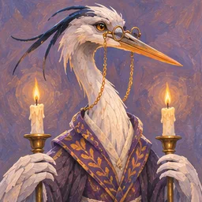
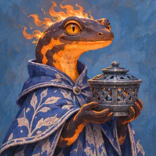
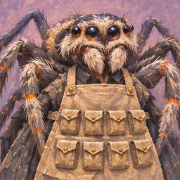
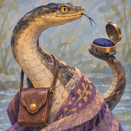
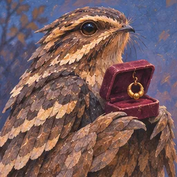

Книга ведущего · Сказочная судебная драма · 14+ · 3–7 игроков + ведущий
Суд Фонарей
Каменные грифоны требуют оставить им законно выигранный Красный Штандарт. Огненные саламандры требуют сжечь его по столь же подлинному праву отказаться от собственного герба. Вас приглашают в скамью вопросителей Суда Фонарей: слушать обе стороны, проверять свидетельства и вынести решение, после которого кто-то действительно потеряет дорогое.
Иллюстрация к первой встрече
Если партия изменила план
Перед чтением вступления сверьте место героев, присутствующих людей и предметы с итогом прошлого вечера. Если условия встречи отпали, сыграйте последствия там, где находится партия. Событие по расписанию может произойти за кадром. Герои узнают о нём от тех, кто был на месте.
Вечер 6. Если герои вернули мандат до слушания
Уточните, у кого физически знамя и кто получил известие о возврате полномочий. Стороны могут просить о новой встрече. До её согласования знамя сохраняется в прежнем состоянии, а герои не обязаны выносить решение.
Группа отказалась от задания
Представлять сторону в споре не будем. Останемся слушателями и сохраним обе версии условий. Отдаём сторонам точные записи условий без доверенности от них. Суд не получает нашего мандата. Грифоны хранят трофей до решения, а собеседники могут вернуться к спору позднее.
Игроки раскрыли тайну раньше
Попросим приложить печать трофея к открытой записи передачи и спросим участников о поединке. Доступные свидетельства — Печать целого трофея, Открытая запись передачи. Передача целого штандарта и право последнего выдоха записаны вместе. Ни одно из них автоматически не отменило другое. Просим секретаря прочитать обе формулы подряд. Согласованная победа подтверждается. Это снимает обвинение в краже, но ещё не даёт права сжечь или разрезать Штандарт.
Партия уступила поле
Задиры заняли проход, мы не успели внести просьбу во время первого слушания. Берём показание доступного свидетеля отдельно от утраченного. Оставляем у крыльца обращение с двумя подписями. Суд может отложить дело; пропущенное выступление не считается состоявшимся.
Карман ведущего
Для игры без подготовки: что говорят люди, места в стороне от главной дороги и прохожие. Пометки о правде слухов — только для ведущего; сказанное за столом становится фактом мира, лишь когда вы его подтвердите.
Слухи
«Погасший фонарь над дверью — это не обида и не траур. Это значит только, что хозяин спит, так что стучать не надо».
Правда. Обычай Фонарного Предела из описания долины: фонари вешают в знак гостеприимства, а не надзора. Удобно для первого вечера, чтобы показать, что в долине нет стражи и тайной власти суда.
«В Круге тихого поединка за всю его историю не пролилось ни капли крови. Правила там подписывают заранее, до первого шага на песок».
Правда. Так и есть: поединки в Круге бескровные и согласованные, это подтверждает Мора во втором вечере. Слух не говорит ничего о судьбе Штандарта, только о том, что победа Карда была добыта без боли.
«Если на одной ткани стоят две печати, одна из них непременно поддельная. Так у нас всегда говорили».
Неправда. Поговорка, а не правда: обе печати подлинны, и это подтверждают три независимых пути — сами печати, признания сторон и открытая запись Норса. Подходит для зеваки на крыльце; опровергается уже в первом вечере и не превращает дело в поиск виновного.
«Саламандры хотят сжечь знамя из мести: проиграли поединок и теперь отыгрываются».
Неправда. Неправда: Веш признаёт победу Карда законной и требует только того, что сохранила печать последнего выдоха. Её признание герои получают в третьем вечере; слух полезен, чтобы игроки сами отделили мотив от права.
«Пика Белая Кромка видела передачу своими глазами. Только про слова её лучше не спрашивать — там, говорят, кто-то хлопнул крыльями».
Отчасти правда. Пика действительно видела обе печати, а хлопок крыльев закрыл часть фразы. Но не стоит делать из этого насмешку: её наблюдение о печатях остаётся точным. Ведёт ко второму и четвёртому вечерам.
«Цапля-председательница давно знает ответ. Она только ждёт, когда вопросители до него додумаются».
Неправда. Неправда: готового ответа у Эйры нет, она не голосует и не подсказывает победителя. Если игроки ищут в ней оракула, пусть Эйра сама спокойно это опровергнет.
«Красный герб саламандр не нарисован на ткани, а вплетён в неё. Его не спорешь и не выжжешь, не повредив всё знамя».
Правда. Это материальный факт, который Уля показывает на пробном лоскуте в третьем вечере. Слух не решает, чьё право сильнее, и не открывает нового способа; он лишь заранее готовит к цене любой меры.
«Если знамя разрезать пополам, всем станет хорошо: грифонам кусок, саламандрам кусок, и делу конец».
Отчасти правда. Разрез возможен физически, но не удовлетворяет ни одно требование: целость трофея нарушена, полного выдоха не было. Ведёт к пятому вечеру, где Кард и Веш объясняют, почему для них это не мир.
«Речной писец никогда не вырывает страниц. Что сказали — то и записал, хоть бы и сам не понимал зачем».
Правда. Норс записал обе формулы на одной странице, потому что фиксирует сказанное, а не устраняет противоречия. Слух готовит к четвёртому вечеру: потерянной страницы и тайной приписки нет.
«Кто взял свечу вопросителя, тот уже не может её положить, пока не вынесет решения».
Неправда. Неправда: отказаться от мандата можно в любой момент, это прямо сказано в уставе. Слух хорош для первого вечера, чтобы Эйра повторила: вы вправе отказаться.
«Куница Бела прочтёт ваше решение буквально. Напишете «восстановить справедливость» — она так и будет стоять над знаменем, пока не скажете, что делать руками».
Отчасти правда. Бела действительно исполняет только точно названные предмет, действие, получателя и предел. Стоять вечно она не будет: просто откажется исполнять двусмысленную фразу до уточнения. Ведёт к пятому и седьмому вечерам.
Места в стороне
Чайная под ивой
Круглый стол под старой ивой у пруда, на ветке которой горит фонарь. Сюда приходят соседи, у которых спор только начинается: по обычаю, всякое дело сначала обсуждают здесь, за чаем, и лишь потом несут на Крыльцо прошений. Чашки на столе разной высоты, для клюва, для лапы и для хобота. Под столом лежит забытая кем-то шахматная доска, на которой никто не доигрывает.
Мостик двух перил
Узкий горбатый мостик через протоку, с перилами разной высоты: левые по росту грифонам, правые по росту саламандрам. Говорят, его строили вместе, и каждый дом сделал перила под себя, не споря с соседом. Посередине мостика есть место, где можно взяться сразу за оба поручня. На досках выцарапано множество инициалов, и никто их не стирает.
Ниша для свечей
Неглубокая каменная ниша в стене у входа в суд, где оставляют свечи вопросителей, когда дело закончено. Свечи здесь стоят разной длины: одни прогорели до огарка, другие почти целые, если скамья отказалась от мандата. Никто не подписывает их, и никто не спрашивает, чья какая. По утрам смотритель смахивает с полки воск, но огарки не трогает.
Печной двор саламандр
Мощёный двор за Домом остывшей искры, где сушат свежую керамику перед обжигом. Плитки здесь тёплые даже ночью, и бродячие коты со всей долины спят на них, свернувшись клубком. У стены стоит скамья из негорючего камня, на которой старые саламандры играют в камешки и громко спорят о погоде. В углу растёт куст жгучего перца, и его стручки никто не рвёт без спроса.
Карниз ожидания
Широкий каменный выступ на утёсе у Каменного гнездовья, где молодые грифоны сидят, свесив хвосты, и ждут, когда старшие закончат разговор. Отсюда видна вся долина и Круг тихого поединка внизу. Камень на краю отполирован когтями до блеска. По обычаю, кто сидит на карнизе, не вмешивается в разговор в зале, а только смотрит.
Прохожие
Фрол Медвяный
Пожилой барсук в вязаном жилете, с подносом медовых пряников и очками, сдвинутыми на лоб.
«Пряник за вопрос, милые. Хороший вопрос — два пряника, а глупых тут не бывает».
Может рассказать: Что в Пределе любой спор сначала обсуждают за чаем под ивой и что дело Штандарта туда тоже приносили, но договориться не вышло.
Ляля Тростинка
Юная цапля-посыльная с сумкой через плечо, полной свёрнутых записок; одна нога у неё всегда поджата.
«Записку отнести? Отнесу. Но читать не буду, у нас это строго».
Может рассказать: Что записки вопросителей можно передавать через неё запечатанными и что посыльные суда никогда их не вскрывают.
Гром Утёсович
Грузный старый грифон с седым хохолком, который почти не летает и ходит по долине пешком, опираясь на сложенное крыло.
«В моё время знамёна вешали повыше, а спорили потише».
Может рассказать: Что каменные таблички в гнездовье записывают имена победителей бескровных поединков и что такую табличку получил и Кард.
Искорка
Маленькая саламандра-подмастерье в фартуке, перепачканном глиной, с обожжённой кисточкой за ухом.
«У огня не кричат. Кто кричит у огня, того просят выйти подышать».
Может рассказать: Что в Доме остывшей искры есть разные мнения о сожжении и что дома это обсуждают открыто, у очага.
Тимофей Ракушка
Улитка-фонарщик с длинным шестом и маленьким фонарём на собственном домике; ползёт медленно и никогда не опаздывает.
«Зажечь фонарь просто. Труднее не забыть, зачем его зажгли».
Может рассказать: Что большой фонарь над Ступенями решения зажигают только в день решения, а в остальные дни лишь протирают от пыли.
Дуня Ряска
Болтливая лягушка в кружевном воротничке, которая сидит на перилах Тростникового балкона и знает всех по голосу.
«Мы поём громко нарочно. Чтобы шёпот на балконе оставался шёпотом».
Может рассказать: Что речной писец каждый вечер работает на Тростниковом балконе и что разговоры там не слышно с берега из-за лягушачьего хора.
За десять минут до первой игры
Откройте первый вечер, прочитайте правду мира и участников. Остальные вечера — планы, их исход решают игроки.
Выберите пакет под фактическое число игроков. Первые три героя — готовое ядро; остальные добавляются по порядку. Возраст игрока не определяет героя.
Согласуйте темы, длительность и сигнал паузы. Передайте игрокам только players.html; раздатки выдавайте по отдельности после указанного открытия.
Откройте Мастерскую проекта, создайте личный черновик и импортируйте выбранный JSON через загрузку пакета. Проверьте состав и начало в предпросмотре. Запуск кампании подтверждает ведущий штатным действием.
Откройте иллюстрацию завязки отдельно. Портреты героев входят в файл для игроков, портреты встречных — в книгу ведущего. Тактические схемы доступны в разделе карт.
8 вечеров; 165 минут: вступление и повторение — 15, три сцены по 40, перерыв — 15, завершение — 15. При письменных ответах сократите свободный обмен, сохранив круг решений.
В Фонарном Пределе звери и чудесные существа разрешают некоторые споры перед временной скамьёй добровольных вопросителей. Красный Штандарт — единственный предмет этого дела; от него не зависит жизнь города. Право, обряды и процедуры полностью вымышлены и не служат руководством по реальным законам. Герои используют обычные поддержанные классы третьего уровня; их занятия — сказочные образы этих возможностей.
Тёплое чудо, трудные честные вопросы, остроумные возражения и горечь проигрыша без унижения.
Два настоящих права на один неделимый предмет
Уважение без обязательного согласия
Цена последовательного прецедента
Разница между фактом, выводом и желанием
Границы
14+: подростки и взрослые играют вместе. Нет графического насилия, сексуального содержания, пыток или обязательного публичного унижения.
Проигрыш стороны не доказывает её нравственную неполноценность. Не переносите спор на реальные судебные дела или опыт семьи игрока.
Стоп, пауза, смена сцены и отказ от речи принимаются без объяснений. Обращайтесь к персонажу, не допрашивайте самого игрока.
Не требуйте настоящей присяги, откровений или долгой речи. Политического переворота, скрытой власти суда и обязательного примирения в истории нет.
Люди за столом
В каждом новом круге первым говорит следующий игрок по кругу. Взрослый не становится руководителем автоматически; возраст не определяет класс, сторону спора или сложность вопроса.
Равноправны произнесённый ответ, записка ведущему, короткая схема и пас. Простой вопрос «Что свидетель видел сам?» и глубокий «Где заканчивается сила его вывода?» дают одинаковое право изменить решение.
Сцена делится на сбор вопросов, одновременную запись решений и поочерёдное разрешение. При 6–7 игроках используйте две параллельные группы на 7 минут; вернитесь общим кругом перед публикацией факта или необратимым действием.
На каждом слушании меняйте роли: задающий вопрос, проверяющий ссылку, формулирующий возражение, записывающий последствия. У трёх игроков роли совмещаются; дополнительные места не владеют уникальными уликами.
Все первые три героя достаточны. Любой персонаж может получить документ, задать вопрос и голосовать без нужного класса, заклинания или успешного броска. Магия и проверки не определяют правоту и не заменяют согласия на опыт.
При отсутствии игрока его герой не даёт новых показаний и не голосует; ранее записанная позиция читается как довод. При менее чем трёх присутствующих отложите обязательное решение и разыграйте необязательный разговор.
Перед спором спросите о допустимой эмоциональной резкости. Один перебой останавливает Эйра; возражение направляется на утверждение. Неподходящую сцену можно заменить письменным обменом без потери материалов.
Отказ от дела возможен сразу или до решения: герои сдают доступные записи, не объявляют виновного и уходят. Если все отказываются, завершите кампанию личными эпилогами; восемь вечеров — полный маршрут для добровольно принятого дела.
Масштабирование группы
3 игроков
Первые три героя: вопрос, проверка, последствия; меняйте роли каждую сцену. Каждый ведёт одну линию доказательств и получает равный голос. На встрече 2 противника, по 12 хитов.
4 игроков
Четвёртое место ведёт наглядную схему требований, затем обменивается ролью с любым героем. Две пары сверяют разные свидетельства. На встрече 3 противника, по 14 хитов.
5 игроков
Пятый игрок испытывает правило контрпримером; это дополнительный вопрос, не исключительное полномочие. Дайте каждому отдельное возражение. На встрече 3 противника, по 16 хитов.
6 игроков
Две тройки готовят доводы за разные решения, затем меняются выводами; общий круг принимает действия. Шестой игрок первым оглашает цену выбранной меры. На встрече 4 противника, по 18 хитов.
7 игроков
Две тройки и сменяемый седьмой ведущий протокола. Писец тоже спрашивает и голосует; роль меняется после каждой сцены. На встрече 5 противников, по 20 хитов.
Первое чтение вслух
Вечер в Фонарном Пределе наступает медленно, как чай, который не торопятся наливать. Долина тонет в мягком янтарном свете: на каждом доме, на каждом мостике и даже на ветке старой ивы у пруда зажигается фонарь. Здесь их вешают не для стражи, а в знак гостеприимства — погасший фонарь означает только, что хозяин спит. Грифоны живут на серых уступах, саламандры — в тёплых глиняных домах у печей, цапли и ужи — среди тростника. Когда соседи не могут решить спор за чаем, они приходят к Суду Фонарей и просят добровольцев сесть на временную скамью вопросителей. Постоянных судей здесь нет: есть те, кто согласился задавать вопросы и отвечать за решение. Над крыльцом суда висят фонари в форме открытых ладоней, и свет от них падает на ступени, отполированные лапами, копытами и хвостами многих поколений просителей. Пахнет воском, речной водой и тёплым камнем. Каменный грифон с отполированным клювом бережно держит пустой красный чехол; подлинник ждёт в галерее после разрешённого осмотра. Рядом саламандра в синей керамической накидке ставит на ступень пустую холодную жаровню. «Я выиграл его честно», — говорит грифон низким, гулким голосом. «И я честно сохранила право его погасить», — отвечает саламандра, не повышая тона. Высокая цапля в очках на тонкой цепочке спускается к вам по ступеням и протягивает незажжённые свечи: «Мы просим не угадать, кто хороший. Мы просим решить дело. Вы вправе отказаться».
Правда мира · только ведущему
Двенадцать лет назад грифоны выиграли Красный Штандарт в согласованном бескровном поединке. Передача целого трофея действительна. Кард не подделывал условия и не отбирал имущество силой; его право включает сохранение предмета целым, а не только владение лоскутом. В открытой формуле целость означает также отсутствие состоявшегося рассечения: починка не отменяет этот исторический факт.
До поединка саламандры законно закрепили за своим огненным гербом право последнего выдоха: отказаться от его публичного существования через полное сожжение носителя. Веш уполномочена заявить этот отказ сейчас. Это право не долг, не наказание и не запрет существования саламандр; герб не содержит душ, памяти или топлива.
Обе нормы равны по местному вымышленному праву; ни одна не содержит исключения для другой. На знамени действительно стоят обе открытые печати. Передача не отменила выдох прямо, а выдох не разрешил прямо уничтожать чужой целый трофей. Нет тайного более высокого закона или виновного хранителя.
Герб вплетён в ткань. Обжечь только рисунок без повреждения основы невозможно, что проверяется на разрешённом образце. Разрезание сохраняет куски, но нарушает охраняемую целость трофея и не выполняет полный обряд. Ремонт, в том числе допустимой магией, не отменяет факта рассечения; это вымышленное правовое условие, а не запрет заклинания. Скамья может разрешить такой новый способ прекращения знака, только признав обе потери и ограничив основание.
Подлинность обоих прав проверяется тремя независимыми путями: доступные печати и ткань; раздельные признания Карда и Веш; открытая запись передачи и свидетельство Моры. Разногласия очевидцев касаются того, что они видели и подразумевали, а не тайного мошенничества.
Скамья игроков принимает решение после разыгранного слушания. Эйра следит за очередью, проверяемостью ссылок и полнотой решения, но не выбирает победителя, не читает мысли и не знает чужих разговоров. Стороны заранее признают полномочия скамьи и обязуются исполнить оформленное решение, сохраняя право его осуждать. До открытия дела обе стороны разрешили Беле предварительный осмотр в галерее. Подлинник пока там; хранение до вердикта ещё не согласовано.
Исход не задан. Нужны установленные факты, выбранное правило при столкновении, ответ на сильнейшее возражение и точное распоряжение с ценой. Большинство всех действующих вопросителей утверждает текст; пас допустим. При равенстве после дополнительного круга либо отсутствии большинства выносится отказ в разрешении по существу, без тайного решающего голоса.
Повороты сюжета
Только для ведущего. Сюжетные повороты держатся на мелочах, замеченных заранее: посейте их в названные вечера, а раскрытие отдайте героям, если они догадались раньше.
Обе печати настоящие
Кажется, что одна из сторон подделала печать, обманула при передаче или прячет тайную приписку, и дело решится разоблачением. На деле обе печати подлинны, поединок был честным, передача — добровольной, а тайного высшего закона нет. Скамье придётся выбирать между двумя настоящими правдами.
Что посеять
Вечер 1. При осмотре в Галерее двух печатей на ткани видны оба оттиска — целого трофея и последнего выдоха; Бела не толкует их приоритет.
Вечер 2. Кард на прямой вопрос признаёт печать последнего выдоха подлинной: он видел её в день передачи, на той же кромке.
Поворот — вечер 3
В Доме остывшей искры Веш кладёт поручение рядом со старой печатью и признаёт: Кард победил честно, знамя отдали законно. Пусть стол сам сложит оба признания и поймёт, что разоблачать некого. Если признаний недостаточно, на Тростниковом балконе Норс покажет три одинаковые копии протокола с обеими формулами и без тайной приписки.
Что меняется после
Расследование заканчивается, и начинается настоящая работа: выбор правила при столкновении двух подлинных прав и ответ на сильнейшее возражение.
Свидетель, которого не нужно уничтожать
Когда выясняется, что красивая цитата Пики не подтверждается, кажется, что её показание надо выбросить целиком. На деле слова «навсегда без исключений» — её поздний пересказ, а две печати и положение участников она видела точно. Ошибка в одной строке не делает ложными остальные наблюдения.
Что посеять
Вечер 2. Пика честно говорит, что две печати видела ясно, но что говорили в ту минуту, не расслышала: как раз захлопали крылья.
Вечер 2. Кард, увидев семейную подпись о вечной победе, не подтверждает её точной цитатой: красиво сказано, но так ли говорили — не знает.
Поворот — вечер 4
На Тростниковом балконе Пика раскладывает три карточки: видела, слышала, добавила позднее. Сама относит две печати к видимому, обрывок формулы — к слышимому, а «навсегда без исключений» — к собственному позднему пересказу. Пусть стол сам решит, как исправить запись, не унижая свидетеля. Если Пика не пришла, Мора подтвердит хлопок крыльев и пределы обзора.
Что меняется после
Показание Пики остаётся в деле в точных пределах. Стороны больше не спорят о цитате и переходят к главному — столкновению подлинных норм.
Разрез — не середина
Разрезать знамя кажется справедливым компромиссом: каждой стороне по куску. На деле разрез не удовлетворяет ни одно требование: трофей перестаёт быть целым, а обряд последнего выдоха не выполнен. Починка не отменяет рассечения. Если скамья выберет разрез, ей нужно отдельное основание и признание двух потерь.
Что посеять
Вечер 3. Уля под лупой показывает: сшить разрез можно так, что шва не найти, но нитки помнят рассечение, и починка его не отменит.
Вечер 3. Веш напоминает текст обряда: сжигается весь носитель, частичный разрез в нём не описан.
Поворот — вечер 5
У белой доски Уля раскладывает целый образец, куски и пепел. Кард объясняет, почему два куска — не трофей, а воспоминание о нём; Веш — почему отрезать знак не значит его погасить. Пусть стол сам поймёт, что разрез — не автоматическая середина, а третий путь, требующий собственного основания. Уля покажет линию, но подписывать вывод о праве откажется.
Что меняется после
Разрез остаётся возможным, но только как самостоятельное решение с названной ценой. Никто больше не может предлагать его как способ никого не огорчить.
Восемь вечеров
1. Две печати на одной ткани — Добровольно принять или отклонить мандат, точно назвать несовместимые требования и установить временное хранение.
2. Что было выиграно — Установить добровольность передачи и отделить наблюдение свидетеля от позднего вывода.
3. Что значит погасить герб — Проверить полномочие Веш, материальную цену обряда и разницу между общим требованием и личным участием.
4. Свидетель под вопросом — Установить границы письменного и устного доказательства и подготовить честный перекрёстный вопрос.
5. Цена точного слова — Подготовить несколько действительно исполнимых мер и проверить их цену до открытого слушания.
6. Слушание открыто — Разыграть открытие процесса, допуск доказательств и прямые вопросы обеим сторонам.
7. Возражение принято — Завершить разыгранное слушание, ответить на сильнейшее возражение и принять конкретное решение либо честный отказ в разрешении.
8. После последнего слова — Сыграть исполнение выбранной меры, проверить действительный предел прецедента и завершить личные истории без обязательного примирения.
Места
Фонарный Предел
Долина мягкого вечернего света, где звери и чудесные существа живут по соседству: грифоны на каменных уступах, саламандры у тёплых глиняных печей, цапли и ужи у тростниковых прудов. Фонари здесь вешают над дверью в знак гостеприимства, а не надзора; погасший фонарь означает только, что хозяин спит. Споры, которые не решаются за чаем, приносят на Крыльцо прошений.
Крыльцо прошений
Широкие каменные ступени перед судом, отполированные лапами, копытами и хвостами многих поколений просителей. Над ними висят фонари в форме открытых ладоней. Скамьи стоят разной высоты — для цапли, для черепахи, для грифона, — а на столе лежат чистые карточки для устных или письменных просьб и чернильница, которую никто не уносит.
Зал раскрытых фонарей
Круглый зал под куполом, с которого свисают раскрытые фонари, и свет от них падает на всех одинаково. По кругу стоят места для скамьи вопросителей, двух сторон и свидетеля; ни один стул не стоит выше остальных, даже стул председательницы. В центре — пустой стол для предъявленных материалов, а у входа висит открытый устав.
Круг тихого поединка
Песчаная площадка между гладкими столбиками, где по обычаю Предела проводят бескровные поединки по согласованным правилам. Песок разравнивают граблями каждое утро, но места давних выступлений отмечены цветной галькой, чтобы их можно было найти. По краю круга оставлены места для очевидцев; ветер с пруда приносит запах тростника.
Каменное гнездовье
Дом грифонов, вырубленный в сером утёсе: широкие балконы, тёплые от солнца ниши и пологий вход для гостей, которые не умеют летать. В главном зале стоит пустая подставка для знамени, начищенная так, будто знамя вернётся завтра. На стенах висят каменные таблички с именами прежних победителей бескровных поединков.
Дом остывшей искры
Саламандровый дом с толстыми глиняными стенами, где всегда пахнет тёплой золой и печёным перцем. Полки уставлены красной керамикой, сиденья сделаны из негорючего камня, а у стены выставлены образцы гербовой ткани с огненным знаком дома. Очаг посреди комнаты горит ровно и тихо; у огня здесь не принято повышать голос.
Комната нитей
Светлая мастерская под самой крышей, где на натянутых нитях сохнут пробные лоскуты, а на столах лежат лупы, пинцеты, гребни для волокон и подносы для пепла. Каждый лоскут подписан: кто разрешил его исследовать и когда. Здесь работает паучиха-исследовательница, и в углах блестят её аккуратные паутинки для образцов.
Тростниковый балкон
Тихая беседка на сваях у пруда, окружённая тростником выше человеческого роста. Здесь можно разговаривать вполголоса, раскладывать схемы на плетёном столе или передавать записки, не боясь, что их прочтут через плечо. Речной писец держит тут протоколы в непромокаемых папках, а лягушки по вечерам поют так громко, что заглушают любой шёпот.
Галерея двух печатей
Светлая комната с высокими окнами, куда стороны добровольно передают спорные вещи на время дела. Каждый предмет лежит на отдельном столе под чистым полотном, а у входа висит доска, где записан каждый, кто входил и что осматривал. Пахнет воском и свежей бумагой; голоса здесь сами собой становятся тише.
Восковый двор
Учебная площадка за судом, где стоят подвижные восковые фигуры для добровольных упражнений: на них отрабатывают вопросы, возражения и, по желанию, приёмы самозащиты. Рядом стенд с правилами упражнений и ведро с песком на всякий случай. Фигуры немного оплывают на солнце, и по вечерам их поправляют тёплыми ладонями.
Ступени решения
Крытая площадка на широких ступенях у выхода из суда, где оглашают распоряжения, передают предметы и прощаются. Под навесом висит один большой фонарь, который зажигают только в день решения. Отсюда видна вся долина; здесь принято говорить ясно и уходить спокойно, даже если решение горько.
Эйра, цапля-председательница

188 лет. Высокая цапля с очками на тонкой цепочке и двумя одинаковыми свечами. Ведёт очередь вопросов и объясняет открытый устав Суда Фонарей.
Место: Крыльцо прошений
Намерение
Получить проверяемое решение или честно оформленный отказ от него.
Собственные знания
Знает процедуру допуска, голосования и исполнения, написанную в уставе.
Лично получила подписи Карда и Веш под согласием на полномочия скамьи.
Видела предъявленные грамоты, но не исследовала ткань и не присутствовала на поединке.
Что говорит
При первой встрече. «Я веду очередь, а не дело. Решать будете вы — я только слежу, чтобы никто не говорил дважды, пока другой молчит».
О своих запретах. «Мне запрещены три вещи: выбирать победителя, дописывать основания и голосовать. Я напоминаю себе об этом каждое утро».
О своём спокойствии. «Моё спокойствие — не знание. Я не знаю, как вы решите. Я просто давно привыкла не знать».
Об отсутствии решения. «Отсутствие решения — тоже честный итог. Хуже, когда решение есть, а основания нет».
О подписях сторон. «Подписи Карда и Веш я получила лично. Всё остальное в этом деле придётся проверять вам».
О мудрости. «Я цапля, а не сова. Мудрость у нас не в перьях, а в терпении стоять на одной ноге, пока не станет ясно».
Секрет или личное убеждение
Она опасается, что вопросители примут её спокойствие за знание правильного ответа; никакого готового ответа у неё нет.
Граница и раскрытие
Не знает тайных разговоров, качества ткани, будущих голосов и истинных чувств сторон. Не может решить дело вместо игроков.
На прямой вопрос о её власти показывает устав и называет всё, что ей запрещено: выбирать победителя, дописывать основания и голосовать.
Кард Серый Утёс
94 лет. Каменный грифон с отполированным клювом и красной лентой на лапе. Представляет держателей Штандарта и называет его честным трофеем.
Место: Крыльцо прошений
Намерение
Вернуть целое знамя, не выдавая копию за настоящую вещь.
Собственные знания
Лично участвовал в бескровном поединке и получил знамя от уполномоченной саламандры.
Видел обе печати на ткани в день передачи.
Знает, почему для него важен подлинник: это предмет его первой победы без причинения боли.
Что говорит
О требовании. «Я, Кард Серый Утёс, выиграл это знамя без единой раны. Прошу вернуть его целым — не лоскут и не копию».
О чужой печати. «Печать последнего выдоха подлинная. Я видел её в тот же день. Это не мешает мне считать, что целость весит больше».
О табличке. «На наших табличках пишут не кого победили, а как. Моя табличка пуста без знамени».
О копии. «Копия будет помнить мастерскую, где её сшили, а не круг, где стоял я».
О возможном проигрыше. «Если решат против меня, я потеряю вещь, а не честь. Запишите это — хотя бы для себя».
Об исполнении. «Осуждать решение буду громко. Исполнять — честно. У грифонов одно другому не мешает».
Секрет или личное убеждение
Он помнит печать последнего выдоха ещё со дня передачи. Не считает её подделкой, но полагает, что она уступила обещанной целости трофея.
Граница и раскрытие
Не знает устройства нитей, нынешних частных разговоров саламандр и будущего решения. Его мнение о приоритете нормы — довод, не факт.
Если спросить отдельно о подлинности и о приоритете печати, признаёт первую и оспаривает второе. Разрешает записать признание дословно.
Веш Тихая Искра

61 лет. Огненная саламандра в синей керамической накидке, с холодной жаровней в руках. Представляет саламандр, решивших отказаться от прежнего герба.
Место: Крыльцо прошений
Намерение
Получить разрешение на полный последний выдох, даже если грифоны будут недовольны.
Собственные знания
Присутствовала при закреплении права последнего выдоха до поединка.
Получила нынешнее открытое поручение заявить отказ от герба.
Знает текст обряда: сжигается весь носитель; частичный разрез в нём не описан.
Что говорит
О требовании. «Я не прошу объявлять Карда обманщиком. Его победа законна. Я прошу решить, жить ли нашему знаку».
Об обряде. «Обряд говорит: весь носитель. Половина выдоха — не выдох, а кашель».
О давлении. «Огонь, которым пугают, греет только того, кто пугает. Пугать я не буду».
О крикунах у порога. «Те, кто кричит у порога, — не наш дом, а громкость. Дом — то, что записано в поручении».
О возможном проигрыше. «Если решат против нас, я подчинюсь. Не обещаю пожать Карду лапу. Обещаю только подчиниться».
О гербе. «Наш знак не держит душ и не хранит памяти. Он просто наш. И мы хотим сказать о нём последнее слово».
Секрет или личное убеждение
Она знает, что победа Карда законна, и не желает оспаривать её ради лёгкого выигрыша. Её требование касается судьбы предмета после победы.
Граница и раскрытие
Не видела всех движений поединка, не читает мысли Карда и не знает, выдержит ли материал новый способ разделения.
При просьбе различить победу и нынешнее владение подтверждает законность передачи. Полномочие показывает без требования поддержать её.
Пика Белая Кромка
23 лет. Невысокая каменная грифоница с меловым пятном на крыле. Ухаживает за пустой трофейной подставкой и помнит день передачи.
Место: Каменное гнездовье
Намерение
Сказать правду, не став оружием против собственного дома.
Собственные знания
Видела передачу из боковой части круга двенадцать лет назад.
Помнит положение участников и две разные печати.
Знает, какие подписи добавила сама на семейную схему позднее.
Уже подготовила частный неподписанный черновик поправки, но не разрешала его оглашать.
Что говорит
О дне передачи. «Я стояла сбоку. Две печати видела ясно — серую и красную. Слов в ту минуту не расслышала».
О цитате. «Слова „навсегда без исключений“ — это я дописала. Потом. Мне казалось, так было сказано».
О своём доме. «Я не хочу стать оружием против своего дома. И не хочу врать ради него».
О возрасте. «Мне тогда было одиннадцать. Это не значит, что я ничего не видела. Это значит, что я не всё слышала».
О поправке. «Поправку я написала сама, ещё до вас. Только боялась показать».
О своём показании. «Если моё „видела“ останется в деле, мне этого хватит. Пусть „дописала“ лежит рядом, для честности».
Секрет или личное убеждение
Она уверенно помнит две печати, но не расслышала оговорку за хлопком крыльев. Слова «навсегда без исключений», то есть о вечной победе, — её поздний пересказ, а не точная цитата.
Граница и раскрытие
Не может восстановить неслышанную фразу; возраст тогда сам по себе не делает остальные наблюдения ложными.
Если дать ей отдельно отметить увиденное, услышанное и добавленное позже, сама исправляет подпись без обвинений во лжи.
Реми Угольный Нос
19 лет. Саламандра с неровно завязанным шарфом и маленькими керамическими бусами. Помогает готовить пустую жаровню и предпочитает отвечать записками.
Место: Дом остывшей искры
Намерение
Чтобы отказ от старого знака услышали как самостоятельный выбор, а не каприз.
Собственные знания
Знает собственное отношение к гербу и нынешние открытые обсуждения дома.
Видел, как Веш получила поручение, и может назвать присутствовавших.
Знает, что среди саламандр существуют разные мнения о желательном исходе.
Что говорит
Записка о праве. «Я за наше право. Но стоять у огня не хочу. Это не измена, это я».
О своей записке. «Не читайте мою записку вслух без меня. Пожалуйста. Мне легче писать, чем говорить».
О мнениях дома. «Среди нас разные мнения. Веш говорит за поручение, а не за каждого из нас».
О поручении Веш. «Я видел, как Веш получала поручение. Могу назвать всех, кто был в комнате».
Об исполнении. «Если решат сжечь, я не приду. Если решат сохранить — тоже. Это не про знамя, это про меня».
В конце. «Спасибо, что моё слово осталось при вас. Я боялся, что оно станет чьим-то доводом».
Секрет или личное убеждение
Реми не хочет участвовать в торжественном сожжении лично, хотя поддерживает право на него. Боится, что Веш воспримет это как измену.
Граница и раскрытие
Не знает условий давнего поединка и не говорит за всех молодых или всех саламандр.
При возможности письменного ответа и обещании не публиковать его личное признание рассказывает о желании не присутствовать на обряде.
Уля Восемь Петель

87 лет. Паучиха в рабочем фартуке с восемью маленькими карманами. Исследует ткань и предлагает безопасные опыты на добровольно переданных образцах.
Место: Комната нитей
Намерение
Чтобы техническое заключение не выдали за готовое решение о праве.
Собственные знания
Исследовала состав предоставленного пробного лоскута.
Знает, как пересекаются красные и несущие нити, и показывает это под лупой.
Может объяснить необратимые материальные последствия полного огня и разреза.
Что говорит
При первой встрече. «Подлинник не трогаем. Работаем с лоскутом: на нём не жалко ошибиться».
О ткани. «Рисунок вплетён в основу. Обжечь одно, не тронув другого, нельзя. Это я вижу под лупой, а не угадываю».
О починке. «Сшить я могу так, что шва не найдёте. Но разрез уже был, и нитки это помнят».
О своих пределах. «Я разбираюсь в нитках, а не в правоте. Не подписывайте моим именем выводы о праве».
О чужой приписке. «Кто-то дописал на полях „следовательно, надо сжечь“. Я этого не утверждала и зачёркиваю».
О карманах. «Восемь карманов — восемь инструментов. Ни один не умеет решать, кто прав».
Секрет или личное убеждение
Она умеет выполнить аккуратный разрез, но уверена лишь в физическом результате. Прекратит ли он юридическое существование герба, решает скамья.
Граница и раскрытие
Не определяет действительность грамот, пределы мандата Веш и справедливость решения; не знает ещё не проведённых опытов.
После согласованного опыта выдаёт только наблюдаемые результаты и отдельно зачеркивает навязанный ей вывод «следовательно, надо сжечь».
Норс, речной уж-писец

71 лет. Уж с чернильной подушечкой на хвосте и очками в кожаном чехле. Записывал условия передачи и сохранил открытый экземпляр протокола.
Место: Тростниковый балкон
Намерение
Чтобы его запись читали целиком, включая пределы того, что она удостоверяет.
Собственные знания
Лично слышал и записал обе формулы при передаче.
Знает, какие подписи удостоверил сам и кому выдал копии.
Знает, что в протоколе нет отказа от последнего выдоха или исключения из целости.
Что говорит
О копиях. «Моя копия, грифонья и саламандровая. Сличайте по буквам — все три писал я».
О противоречиях. «Я записывал сказанное, а не устранял противоречия. Противоречия — ваша работа».
О намерениях сторон. «Обсуждали ли приоритет до поединка? Не знаю. Молчание в протокол не помещается».
О поздней строке. «Покажите мне правило, по которому поздняя строка главнее ранней. Я давно пишу и такого не встречал».
О своём тоне. «Обе формулы я читаю одним тоном. Это не равнодушие, а моя работа».
О пределах записи. «Подписи удостоверяю, слова удостоверяю. Мысли — нет. У ужей нет такой чернильницы».
Секрет или личное убеждение
Он не знает, обсуждали ли стороны приоритет норм заранее. Записал обе формулы, потому что ему поручили фиксировать сказанное, а не устранять противоречия.
Граница и раскрытие
Не знает частных намерений участников и не может дописать отсутствующую оговорку по памяти о настроении.
По просьбе показывает полный лист, читает обе формулы одинаковым тоном и прямо отвечает «не знаю» на вопрос о невысказанном соглашении.
Мора Круглый Панцирь
222 лет. Черепаха с дорожной сумкой и ярким платком, защищающим от ветра. Была нейтральной распорядительницей давнего поединка.
Место: Круг тихого поединка
Намерение
Подтвердить честность события, не превратившись в судью нынешнего дела.
Собственные знания
Лично проверила согласие участников на бескровный поединок.
Видела победу Карда и добровольную передачу целого знамени.
Знает расположение очевидцев и момент хлопка крыльев.
Что говорит
О поединке. «Я проверила согласие обоих: без когтей, без огня, до первого касания земли крылом».
О передаче. «Видела победу Карда. Видела, как знамя отдали целым. Чего не видела — не скажу даже ради хорошего дела».
О своих чувствах. «Нынешний спор меня печалит. Но это моё чувство, и в протокол его не пишите».
О хлопке крыльев. «Хлопок был громкий, будто сто ладоней ударили разом. Слов в ту минуту я не разобрала».
О мыслях. «Мысли под панцирь не заползают. Спрашивайте о том, что было, а не о том, что думали».
О круге. «За мою жизнь в этом круге не пролилось ни капли крови. Это не везение, а правила, подписанные заранее».
Секрет или личное убеждение
Считает нынешний спор печальным, но это её чувство. Она не присутствовала на предварительных разговорах о гербе.
Граница и раскрытие
Не знает содержания прежнего решения саламандр и не подтверждает смысл фраз, которые не слышала.
Когда вопросители разделяют событие и его значение, охотно заверяет схему видимого ей пространства и называет границы обзора.
Бела Прямая Линия
38 лет. Куница в сером переднике, с футляром для ножниц и опечатанной сумкой. Проводит разрешённый предварительный осмотр Штандарта и готова принять его на хранение по отдельному соглашению.
Место: Галерея двух печатей
Намерение
Получить точный текст, который не заставляет её додумывать чужое решение.
Собственные знания
Лично получила подлинник только для предварительного осмотра и записала его состояние.
Видела обе печати при этом осмотре; хранение до решения ещё не согласовано.
Знает процедуры передачи, огня и разреза на своей площадке.
Что говорит
При первой встрече. «Доска у входа помнит каждого. За всё время здесь не пропало ни одной нитки».
О словах. «Слово „беречь“ я понимаю. Слово „разобраться“ — нет: под него можно подогнать и ножницы».
О журнале. «Мой журнал говорит одно: с часа приёма знамя никто не трогал без записи. Больше — ничего».
О распоряжении. «Напишите глагол, который делается руками. „Сохранить память“ я исполнить не могу».
Перед исполнением. «Если в тексте есть хоть одно слово, которое можно понять двумя способами, скажите сейчас».
О своём страхе. «Я боюсь необратимого по красивой фразе. Поэтому прошу некрасивых, но точных».
Секрет или личное убеждение
Боится необратимого действия по красивой, но двусмысленной фразе. Готова публично отказаться от исполнения до уточнения предмета, действия и получателя.
Граница и раскрытие
Не знает обстоятельств поединка, чужих намерений и будущего вердикта; не имеет права выбирать меру сама.
На репетиции повторяет распоряжение буквально и указывает каждую неоднозначность до того, как касается подлинника.
Аска Бронзовое Перо

42 лет. Козодой с маленькой бронзовой серьгой в бархатной коробке. Следит за открытым делом и готовит вопрос о собственном похожем предмете.
Место: Ступени решения
Намерение
Понять, относится ли новое правило к серьге, которую ей подарили без условия целости.
Собственные знания
Лично получила серьгу в подарок; на ней есть знак дарителя.
Знает, что в её подарочной записке нет условия сохранения предмета целым и нет печати последнего выдоха.
Читала открытое приглашение по делу Штандарта и знает заявленные требования; слушание ещё не состоялось.
Что говорит
О серьге. «На моей серьге тоже знак дарителя! Значит, и с ней можно, как со Штандартом?»
О громком деле. «Мне удобнее сказать „как в деле Штандарта“, чем объяснять мою записку. Признаю».
О запретах. «Дайте мне точные слова, а не „так нельзя“. „Нельзя“ я слышу с птенцового возраста».
О подарочной записке. «В моей записке нет ни целости, ни выдоха. Только „носи на здоровье“. Это ведь другое, да?»
О своём решении. «Что делать с серьгой, решу сама. Но теперь я знаю, что ваше решение — про знамя».
О дарителе. «Я не представляю дарителя и не знаю, чего он хочет сейчас. Я знаю только, что серьга красивая».
Секрет или личное убеждение
Ей удобнее ссылаться на громкое название дела, чем объяснять отличающиеся условия подарка. Она готова признать отличие, если его покажут без насмешки.
Граница и раскрытие
Не знает непубличных показаний, не представляет дарителя и не может подтвердить его нынешнее желание.
При просьбе предъявить именно условия её случая показывает записку целиком. Не утверждает, что по делу Штандарта уже вынесен нужный ей исход.
Возможные финалы
Целое знамя
Условия: После слушания большинство принимает приоритет целого добровольно переданного трофея и объясняет, почему остаточное право выдоха здесь уступает.
Штандарт возвращают грифонам целым. Саламандры проигрывают требование сожжения; Веш уходит, не пожав Карду лапу. Скамья проверяет применение узкого правила к следующему предмету.
Цена: Саламандры вынуждены терпеть публичное существование отвергнутого герба на чужом трофее. Выбранный предел связывает и будущие решения героев о собственных подарках.
Эпилог — читать вслух
Красный Штандарт возвращается в Каменное гнездовье целым. Кард ставит его на подставку не сразу: сначала долго стоит рядом, касаясь ткани кончиком крыла, а потом говорит, что первая победа без боли снова получила место, где её можно вспомнить. На табличке под знаменем по-прежнему написано не кого победили, а как. Саламандры проиграли требование сожжения. Веш уходит со Ступеней решения, не пожав Карду лапу, и никто не просит её об этом. Её знак остаётся на чужом трофее, публичный и отвергнутый, и саламандрам придётся это терпеть. Реми, если пришёл, стоит в стороне и молчит. Скамья прикладывает своё узкое правило к следующему предмету — серьге Аски — и убеждается, что оно не расползается на любые вещи с похожим рисунком. Но выбранный предел связывает и самих вопросителей: если когда-нибудь они подарят кому-то целую вещь, их собственные прежние права на неё окажутся под тем же правилом. Эйра гасит свои свечи по одной. Лягушки в тростнике снова заводят песню, будто ничего не случилось.
Разрешённый пепел
Условия: После слушания большинство признаёт сохранённое право последнего выдоха сильнее требования целости и прямо разрешает уничтожение чужого трофея.
Веш сжигает Штандарт при свидетелях. Кард получает только удостоверение того, что его победа была законной; копия не становится подлинником.
Цена: Грифоны навсегда теряют единственный настоящий трофей. Выдох получает силу против последующего добросовестного приобретателя; герои обязаны выдержать этот неприятный вывод.
Эпилог — читать вслух
Веш поднимает холодную жаровню, и впервые за двенадцать лет в ней разгорается огонь. Сожжение проходит при свидетелях, тихо и без торжества: Красный Штандарт вспыхивает, ткань коротко шуршит, и на подносе остаётся горстка пепла с медным отблеском. Последний выдох совершён полностью, как записано в обряде. Кард получает только удостоверение того, что его победа была законной. Копия не станет подлинником, и он это знает. Если он остался на ступенях, то стоит неподвижно, пока пепел не остынет, а потом уходит в гнездовье, к пустой подставке, которая теперь пуста навсегда. Грифоны потеряли единственный настоящий трофей. А решение получило силу и против будущих честных приобретателей: всякий, кто примет вещь с сохранённым правом выдоха, должен помнить, что её однажды могут сжечь. Вопросителям придётся выдержать этот неприятный вывод — они его подписали. Веш благодарит скамью коротким кивком, без улыбки. Реми не приходит. Эйра гасит свечи и долго смотрит на поднос, словно пытаясь запомнить, как выглядел знак.
Разрез, который не примирил
Условия: Большинство отдельно обосновывает прекращение герба разрезом, указывает точную линию и признаёт, что ни одно исходное требование полностью не удовлетворено.
Бела отделяет герб по согласованной границе. Части возвращают сторонам; разрез прекращает право на целое знамя и юридическое существование общего рисунка по узкому новому основанию.
Цена: У грифонов остаётся повреждённый трофей, у саламандр нет полного обряда последнего выдоха. Обе стороны могут считать решение плохим; технически аккуратный разрез не отменяет потерь.
Эпилог — читать вслух
Бела проводит линию по согласованной границе — медленно, по синим точкам, которые показала Уля. Герб отделяется от знамени, и части передают сторонам: грифонам — полотнище без знака, саламандрам — их отрезанный рисунок. Разрез прекращает право на целое знамя и юридическое существование общего рисунка по узкому новому основанию, которое скамья отдельно обосновала. Но никто не получил того, чего просил. У грифонов остался повреждённый трофей: Уля может зашить его так, что шва не найдёшь и под лупой, но разрез уже был, и починка его не отменит. У саламандр нет полного обряда последнего выдоха — только отрезанный знак, который Веш держит так, будто он всё ещё горячий. Обе стороны вправе считать решение плохим, и обе так и говорят, каждая по-своему. Технически аккуратный разрез не отменяет потерь. Кард и Веш впервые за всё дело хоть в чём-то согласны: середина — не примирение. Эйра записывает это в протокол дословно. Свечи вопросителей догорают ровно, ни ярче, ни тусклее.
Дело без разрешения
Условия: Нет большинства, не установлено необходимое полномочие или скамья мотивированно признаёт предел своей компетенции.
Временную печать снимают, Штандарт возвращают прежнему держателю Карду без решения о праве сожжения. Герои записывают доказанные факты и причину незавершённости; никто не обязан продолжать кампанию.
Цена: Веш не получает желаемого действия, а Кард — окончательной защищённости трофея. Время и надежда потрачены; спор остаётся открытым, но личные эпилоги завершаются.
Эпилог — читать вслух
Большинства нет, полномочие не установлено или скамья мотивированно признала предел своей компетенции. Временную печать снимают, и Бела возвращает Штандарт прежнему держателю — Карду. Это не решение о праве сожжения: вопрос остаётся открытым, и все это знают. Вопросители записывают доказанные факты — честный поединок, две подлинные печати, добровольную передачу — и причину, по которой дело не завершилось. Никто не обязан продолжать. Веш не получает желаемого действия и уходит, сказав только, что подаст прошение снова, когда найдётся скамья, готовая решить. Кард забирает знамя, но окончательной защищённости трофея у него нет: подставка снова занята, однако каждое утро он будет помнить, что спор не кончен. Время и надежда потрачены, и их не вернуть. Эйра благодарит вопросителей за честность: отсутствие решения лучше решения без основания. Пика, Норс и Мора расходятся, каждый со своей проверенной правдой. Личные истории завершаются, даже если общая осталась незаконченной. Фонари над дверями долины снова означают только гостеприимство.
Свечи оставлены на крыльце
Условия: Герои добровольно отказываются от мандата до вынесения решения и не распоряжаются предметом.
Эйра принимает отказ. Приглашённые уходят с правом не превращать дружбу или любопытство в судебную обязанность; каждой стороне передают только разрешённые записи.
Цена: Герои не определяют судьбу Штандарта и не получают публичного признания за решение. В завершении каждый называет, кому всё же хочет помочь без полномочий суда.
Эпилог — читать вслух
Вопросители добровольно сложили полномочия до вынесения решения. Эйра принимает отказ спокойно, без упрёка: свечи остаются на крыльце, рядом с чистыми карточками для следующих просьб. Судьбу Штандарта герои не определили, и публичного признания за решение не получат. Приглашённые уходят с правом не превращать дружбу или любопытство в судебную обязанность. Каждой стороне передают только разрешённые записи: Карду — его признание и показание Моры, Веш — её мандат и заключение Ули о ткани. Частная записка Реми остаётся частной. Знамя лежит в Галерее двух печатей, пока стороны не найдут другую скамью. Кард благодарит за честные вопросы, Веш — за то, что её не торопили. Ни один из них не знает, чем всё кончится, и вопросители тоже не знают. В завершение каждый называет, кому всё же хочет помочь без полномочий суда: проводить Пику до гнездовья, отнести Реми ответную записку, посидеть с Морой у пруда. Помощь без мандата меньше, чем решение, — но иногда она нужнее.
Раздатки · выдавать постепенно
Устав временной скамьи — Первый вечер, после чтения приглашения; можно выдать и отказавшимся героям.
Два требования — Первый вечер после раздельного уточнения предмета и желаемого действия у Карда и Веш.
Две открытые формулы — После разрешённого осмотра обеих печатей или получения обеих заверенных копий.
Заключение о ткани — Третий вечер после наблюдения опыта или чтения ранее проведённого опыта Ули.
Полная запись передачи — Четвёртый вечер после чтения полного листа Норса; возможна выдача на шестом вечере по запросу.
Поправка свидетеля — После согласия Пики опубликовать исправленную подпись; частные разговоры не прилагаются.
Лист решения — Пятый вечер при подготовке слушания; не содержит заранее выбранного исхода.
Подарочная открытка Аски — Восьмой вечер, когда Аска предъявляет новый пример; не выдавать вместе с материалами основного дела.
Как читать игровые проверки
Проверки характеристик и навыков, переговоры, часы и последствия из книги разрешает ведущий. Они не являются дополнительными автоматическими правилами приложения. Улики доступны без обязательного успешного броска. Подготовленные встречи начинаются только по решению ведущего; исходы и эпилоги заранее не записаны.
Статус подготовки
Авторская кампания подготовлена отдельным агентом, запрошенным как GPT-6 Astra / max. Проверки пакетов и игровых границ описаны в verification.json и общем отчёте. Живой плейтест с людьми ещё не проведён. Локальная папка с исходниками и книгой предназначена ведущему.